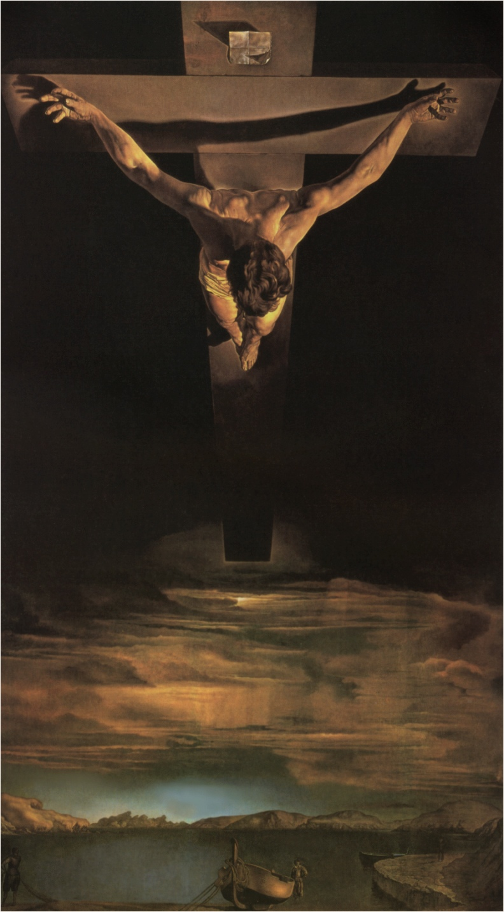
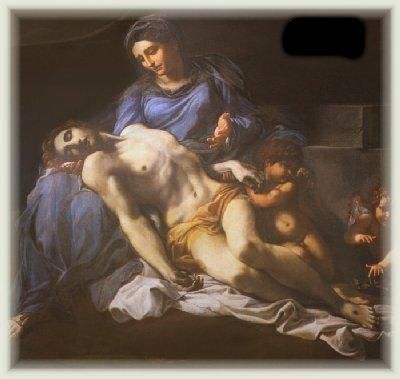

"PRELÚDIO E PURIFICAÇÃO"
Com a finalidade de elucidar a Doutrina sobre o PURGATÓRIO, a seguir apresentamos um roteiro evidenciando os principais aspectos em benefício dos fieis.
PRELÚDIO
Todo ser humano
têm um Corpo e uma Alma. O Corpo nasce do relacionamento dos pais, abençoado pelo Sacramento do Matrimônio; a Alma
vêm de DEUS. Então, cada pessoa possui uma parte humana, que é o seu Corpo,
e uma parte Divina, que é a Alma, invenção de DEUS. São duas partes
essenciais e ninguém existe sem elas.
dos pais, abençoado pelo Sacramento do Matrimônio; a Alma
vêm de DEUS. Então, cada pessoa possui uma parte humana, que é o seu Corpo,
e uma parte Divina, que é a Alma, invenção de DEUS. São duas partes
essenciais e ninguém existe sem elas.
Nascemos por determinação Divina, que nos criou, nos proporcionou dons e virtudes e nos confiou uma missão para cumprirmos na caminhada existencial. A missão engloba os múltiplos afazeres, inclusive o trabalho e a grandeza da dedicação do fiel ao CRIADOR. É através dela que temos a oportunidade de demonstrar a intensidade do empenho, da fidelidade, o nosso valor e nossa responsabilidade pessoal, aproveitando o recurso Divino para santificar a própria vida, a fim de que um dia, concluída a missão terrestre, a Alma possa retornar à eternidade para junto de DEUS, de onde todas as Almas saíram.
Todavia, por influência do pecado original e dos pecados subsequentes, o ser humano foi envolvido pela concupiscência, pela ambição, inveja e muitas outras transgressões, deixando-se seduzir pelo mal e se afastando do modelo Divino, vivendo completamente distante de DEUS.
JESUS foi enviado pelo PAI ETERNO para Redimir e Salvar a humanidade de todos os tempos. Na conclusão de sua Divina Missão, lavou os nossos muitos pecados e neutralizou a mancha do pecado original, com o seu Sagrado Sangue derramado no alto de um madeiro. Como escreveu o Papa João Paulo II: A redenção realiza-se no sacrifício de CRISTO, pelo qual o homem resgata a dívida do pecado e fica reconciliado com DEUS.” (Tertio millennio adveniente, 7).
Para santificar a nossa existência, JESUS deixou-nos a sua Obra admirável, o seu exemplo fascinante de Homem, ensinou-nos a rezar e primordialmente, instituiu os Sete Sacramentos para também nos proporcionar uma vida em plenitude.
Então, para socorrer os fieis nas quedas e nos desvios morais, os Sacramentos instituídos pelo SENHOR são aqueles que atuam de maneira decisiva neutralizando o mal e restituindo a pureza ao pecador.

Todavia, existe um número considerável de pessoas que procuram trilhar o caminho do direito, da justiça e do amor fraterno. Rezam, frequentam a Santa Missa, recebem os Sacramentos e procuram seguir os Mandamentos de DEUS. Têm as suas fraquezas e limitações, as suas dúvidas e os seus pecados, mas buscam com ansiedade a conversão do coração, apesar de suas constantes quedas. Com certeza, estas pessoas com perseverança conseguirão cativar a amizade de DEUS e viverão em comunhão de amor com o CRIADOR.
Isto não impede, entretanto, que mesmo sendo fieis a DEUS, a tentação diabólica continue a atuar e a querer pela força do pecado seduzi-las a trilhar um caminho distante do SENHOR. Então acontecem as quedas e as reincidências no pecado. Desta realidade resulta que também morrem diariamente muitas pessoas num “estado de graça deformado” , porque em vida souberam estimular uma filial relação de amizade com o CRIADOR, embora, por influência de satanás, transgrediram a Lei de DEUS e não estavam totalmente remidas de todas as suas culpas, quando faleceram. Ou seja, morreram levando na Alma o resquício da mancha de algum mal praticado que não foi perdoado através do Sacramento da Confissão ou da Unção dos Enfermos. Mas é importante realçar, essas Almas, sem nenhuma dúvida, estão com a Salvação Eterna garantida, isto é, elas não irão para o inferno, porque em vida souberam cativar o amor e a amizade de DEUS. Assim, não tendo pecados suficientes para merecerem o Inferno, elas também não têm a santidade imprescindível para entrar no Céu, porque no Céu “... jamais entrará algo de impuro” .(Ap 21, 27) Antes, terão que se submeter a uma “purificação” , a fim de limpar integralmente as manchas remanescentes dos pecados que cometeram e alcançar a pureza necessária para entrar no Reino de DEUS.
A Igreja deu o nome de "Purgatório" a esta “purificação” da Alma. Nela, são removidas toda a sujeira remanescente das transgressões cometidas em vida, deixando a santidade emergir, como era originalmente.
PURIFICAÇÃO
O Catecismo Católico deixa claro que a purificação das Almas é feita no Purgatório, um local reservado onde cada Alma paga a sua dívida de amor com o CRIADOR. O Papa João Paulo II define muito bem afirmando que a Purificação: “deixa a Alma num estado totalmente limpa”. Quando uma pessoa falece, sua missão terrestre acabou ela não tem mais nenhum meio para alcançar por seus próprios atos, qualquer merecimento diante de DEUS. O corpo se transforma em pó e a Alma alcançará o Céu ou irá para o Inferno. O que normalmente ocorre é que antes dela alcançar o Céu será necessário a alma se purificar, prestando contas de sua vida a Justiça Divina que atua em igual intensidade da misericórdia de DEUS. Assim, somente passará pela purificação as Almas dos Justos, ou seja, aquelas Almas que não merecem o inferno. Em vida elas souberam cativar a amizade do SENHOR e viveram como pessoas de bem, exercitando o direito, a justiça e o amor a DEUS, embora tivessem também os seus pecados. Desse modo, passando pelo Purgatório terão o ensejo de alcançar à santidade exigida para entrar no Paraíso Divino.
O pecado produz um duplo efeito na Alma tornando-a merecedora: da “pena eterna” e da “pena temporal”. A primeira torna a Alma incapaz da Vida Eterna, privando-a da comunhão e do convívio com DEUS. Para entender bem a segunda pena, lembremos que todo pecado, mesmo o venial, acarreta também uma espécie de “mancha do apego ao mal” nas criaturas, exigindo uma “purificação” aqui na terra ou após a morte no "Purgatório". Esta purificação liberta a Alma da chamada "pena temporal" do pecado, que é denominada por alguns teólogos de “débito de sofrimento”. A culpa merecedora da “pena eterna” é perdoada pelo Sacramento da Penitência ou Confissão, mas a “dor”, ou seja, a “pena temporal” permanece na Alma como um “débito remanescente do pecado” e terá que ser sofrido na vida presente ou na vida futura, porque é uma espécie de “sombra” que intercepta a Visão de DEUS e se torna um obstáculo para a união da Alma com o seu CRIADOR.
O fiel evitará as chamas da "purificação" se pagar o seu “débito de sofrimento” em vida, através de penitências, atos de expiação e reparação, por renúncia , também por meio da mansidão evangélica, do cultivo da paciência, do exercício fraterno da piedade e do auxílio misericordioso.

“Temos de realizar as obras Daquele (CRIADOR)que Me enviou, enquanto é dia (enquanto estou vivo); vem à noite (quando estarei morto), quando ninguém pode trabalhar”. (Jo 9, 4)
As palavras de JESUS que São João transcreve no Evangelho, dão uma dimensão real da necessidade de procurarmos em vida realizar dignamente e da melhor maneira, a missão que o PAI ETERNO nos confiou. Assim, realizar as obras e buscar o perdão de nossos pecados, porque depois, vem à noite (a morte), quando mais nada poderemos fazer para alcançarmos méritos diante do SENHOR. Se isto não for feito convenientemente, teremos que limpar primeiro o nosso espírito através de uma Purificação, para podermos alcançar a felicidade maior de encontrar DEUS.
Esta realidade sinaliza que a “purificação” é necessária para a entrada no Céu. Isto porque, pelos fatores adversos que surgem no cotidiano, é raro uma pessoa alcançar uma santidade em vida que mereça após a morte, entrar diretamente no Céu. Normalmente deve acontecer uma passagem pelo Purgatório para satisfazer a Justiça Divina, que é absolutamente igual para todas as pessoas.
A duração e a intensidade das penas são definidas no momento, após a morte, e cada uma delas espelha o número e à gravidade das faltas que não foram expiadas pelo fiel em vida. São Mateus no seu Evangelho esclarece o assunto reproduzindo as palavras de JESUS: “...dali (da purificação) não sairá, enquanto não pagar o último centavo”. (Mt 5, 26) Entretanto, sem qualquer prejuízo para a Justiça de DEUS, a Misericórdia do SENHOR sempre se manifesta concordando e promovendo a redução das penas, mediante as preces e os sacrifícios da Igreja Militante que são feitos em sufrágio das Almas que estão no Purgatório. As Almas que estão passando pela "purificação", nada podem fazer para diminuir as suas penas, mas nós podemos ajudá-las através das nossas orações e boas obras.